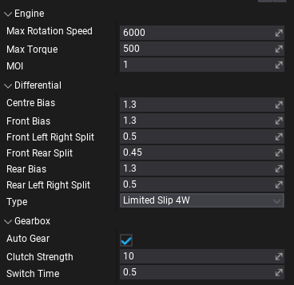
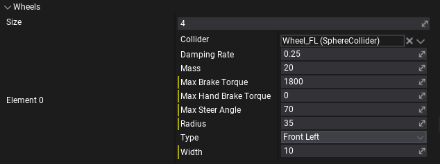
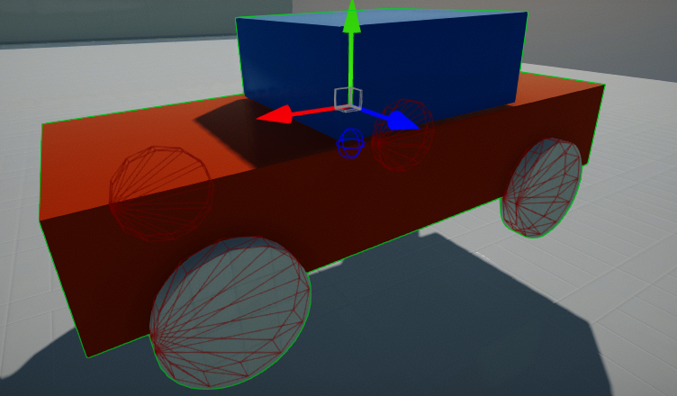
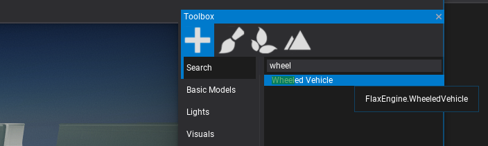
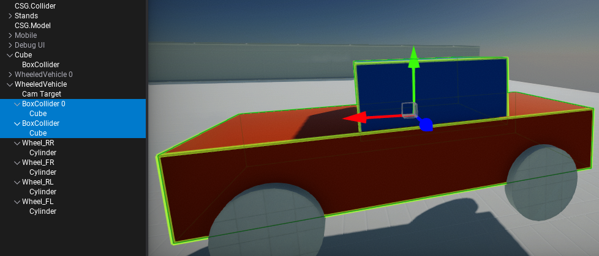
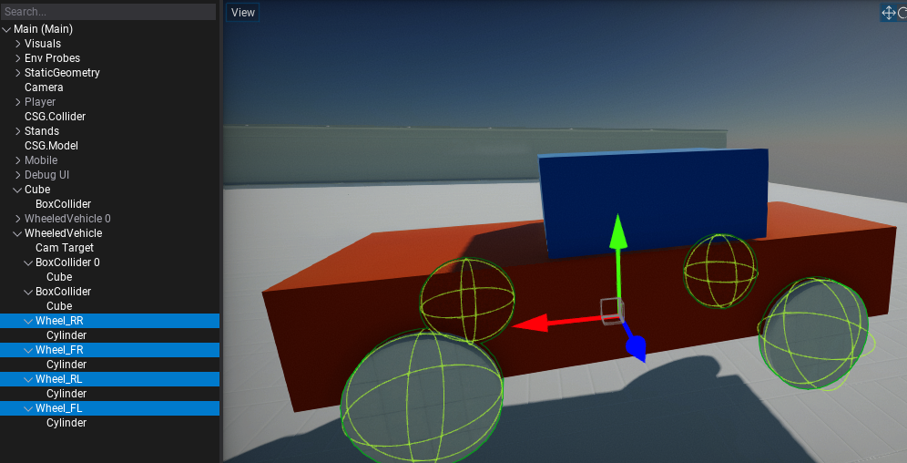
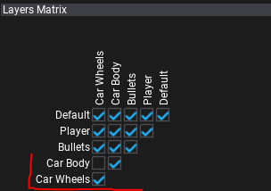

Vehicles

Flax supports creation of physical-based vehicles such as cars and boats based on the RigidBody and Colliders. This documentation section explains certain aspects in this topic.
Wheeled Vehicle
Wheeled Vehicle is a car vehicle that uses wheels. It's built on top of the RigidBody with collider representing its chassis shape and wheels.
Properties

To configure car driving experience use properties grouped under Engine, Differential, and Gearbox categories. See tooltips for the property labels to learn more about each setting and it's units.
Additionally, you can specify Drive Type, Use Reverse As Brake and other RigidBody properties including vehicle Mass and Center Of Mass Offset.
Wheels

To describe vehicle wheels confgiuration Wheels array contains a list of per-wheel properties. Ensure to link proper Collider and define wheel Type. Each wheel is described as cylinder shape (radius, width) that should be approximation of the wheel collider dimensions. Each wheel can use steering by adjusting Max Steer Angle. Wheels can also use brakes and handbrakes (use appropeate properties to define torques).
Scripting
Vehicles contain extensive API to access them from code. If you modify car properties like engine or gearbox configuration ensure to call Setup() method after. It will rebuild the vehicle and reset its state.
Vehicle input control:
SetThrottle(float value)SetSteering(float value)SetBrake(float value)SetHandbrake(float value)ClearInput()
Vehicle state access:
float GetForwardSpeed()float GetSidewaysSpeed()float GetEngineRotationSpeed()int GetCurrentGear()/void SetCurrentGear(int value)int GetTargetGear()/void SetTargetGear(int value)void GetWheelState(int index, out WheelState result)
Wheel state properties:
bool IsInAirPhysicsColliderActor TireContactColliderVector3 TireContactPointVector3 TireContactNormalfloat TireFriction
When creating complex vehicles (eg. based on Animated Model) you can query wheel colliders state and wheels or engine state to control the skinned vehicle body (eg. rotate wheel bones in Anim Graph).
Technical details
Vehicles are using PhysX Vehicles SDK for driving, suspension and car components simulation (gearbox, engine, clutch, suspension, differential). Many of the exposed properties can be precesly configured to enhance the driving model per-vehicle.
- Maximum amount of wheels used per-vehicle is
20. Zaxis is forward.
To learn more about vehicle physical simulation see related documentation here.
For selected wheels vehicles the wheels are drawing on red and center of mass location is drawn as blue wire sphere.

How to setup a car?
1) Create new Wheeled Vehicle actor (default options are configured for generic 4 wheel car) 
2) Add mesh to visualize car body (model or skinned model)
3) Add collider for car body physical collision (convex mesh or set of primitive shapes - triangle meshes are not supported) - as children to vehicle 
4) Add wheel colliders (eg. sphere colliders) - as children to vehicle and setup them in Wheels list 
5) Setup wheels to be on a separate layer than car body and disable collisions between them in Physics Settings 
6) Add script to control car - you can use the script below and set camera, car and camera target (camera target is root of camera rotation).
using System;
using System.Runtime.ConstrainedExecution;
using FlaxEngine;
public class CarScript : Script
{
public WheeledVehicle Car;
public Actor CameraTarget;
public Camera Camera;
public float CameraSmoothing = 20.0f;
public bool UseMouse = true;
public float CameraDistance = 700.0f;
private float _pitch = 10.0f;
private float _yaw = 90.0f;
private float _horizontal;
private float _vertical;
/// <summary>
/// Adds the movement and rotation to the camera (as input).
/// </summary>
/// <param name="horizontal">The horizontal input.</param>
/// <param name="vertical">The vertical input.</param>
/// <param name="pitch">The pitch rotation input.</param>
/// <param name="yaw">The yaw rotation input.</param>
public void AddMovementRotation(float horizontal, float vertical, float pitch, float yaw)
{
_pitch += pitch;
_yaw += yaw;
_horizontal += horizontal;
_vertical += vertical;
}
public override void OnUpdate()
{
if (UseMouse)
{
// Cursor
Screen.CursorVisible = false;
Screen.CursorLock = CursorLockMode.Locked;
// Mouse
var mouseDelta = new Float2(Input.GetAxis("Mouse X"), Input.GetAxis("Mouse Y"));
_pitch = Mathf.Clamp(_pitch + mouseDelta.Y, -88, 88);
_yaw += mouseDelta.X;
}
}
public override void OnFixedUpdate()
{
// Update camera
var camTrans = Camera.Transform;
var camFactor = Mathf.Saturate(CameraSmoothing * Time.DeltaTime);
CameraTarget.LocalOrientation = Quaternion.Lerp(CameraTarget.LocalOrientation, Quaternion.Euler(_pitch, _yaw, 0), camFactor);
//CameraTarget.LocalOrientation = Quaternion.Euler(pitch, yaw, 0);
camTrans.Translation = Vector3.Lerp(camTrans.Translation, CameraTarget.Position + CameraTarget.Direction * -CameraDistance, camFactor);
camTrans.Orientation = CameraTarget.Orientation;
Camera.Transform = camTrans;
var inputH = Input.GetAxis("Horizontal") + _horizontal;
var inputV = Input.GetAxis("Vertical") + _vertical;
_horizontal = 0;
_vertical = 0;
var velocity = new Float3(inputH, 0.0f, inputV);
velocity.Normalize();
//velocity = CameraTarget.Transform.TransformDirection(velocity);
Car.SetThrottle(velocity.Z);
Car.SetSteering(velocity.X);
Car.SetHandbrake(Input.GetAction("Handbrake") ? 1.0f : 0.0f);
}
}
7) Play & Test
Car Template
If you want to get started with cars quickly get this Default Car prefab, add it to you project, spawn on a map and setup the CarScript into it.